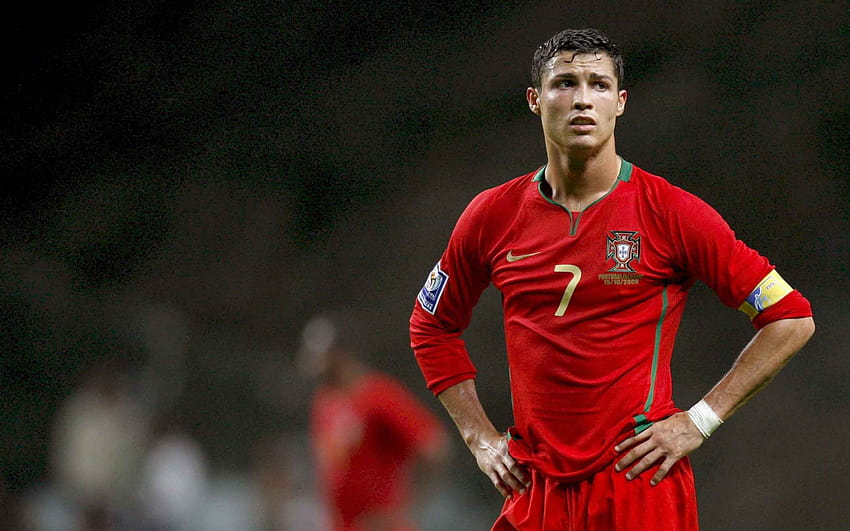

2000 – 2010
From teenage star to the world's best player.
The Decade Overview
The 2000s was the decade when Ronaldo changed from a talented young player to the best player in the world.
He won his first Ballon d'Or in 2008. Then in 2009, he moved to Real Madrid for a world record fee of £80 million.
In the 2007–08 season, Ronaldo scored 42 goals in all competitions and won both the Premier League and Champions League.
Season Stats
Portugal at International Level

Ronaldo made his debut for Portugal in 2003 at age 18.
Portugal Results
- Euro 2004 — Reached the final
- Lost to Greece
- Portugal were the host nation
- World Cup 2006 — 4th place
- Best World Cup result for Portugal at the time
- Ronaldo scored 3 goals
- Euro 2008 — Quarter finals
Move to Real Madrid
In 2009, Ronaldo left Manchester United and joined Real Madrid for £80 million. This was the most money ever paid for a player at that time.
| Year | Event | Result |
|---|---|---|
| 2003 | Joined Man United | £12 million fee |
| 2008 | First Ballon d'Or | Best player in world |
| 2008 | Champions League | Won with Man United |
| 2009 | Joined Real Madrid | £80 million world record |